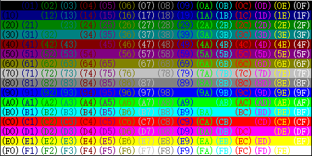
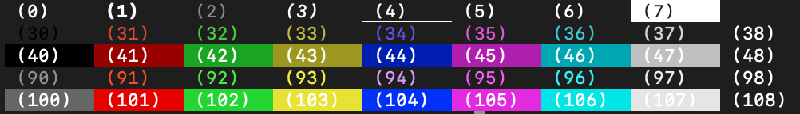

一些可能会用得到的整理
Terminal中彩色显示
On Windows (cmd)
在cmd中设置输出的字体颜色和背景颜色需要用到windows.h头文件（C++）。核心在于GetStdHandle()和SetConsoleAttribute()。其中，SetConsoleAttribute()的第二个参数表示背景和字体颜色（默认颜色为0x07）。
C++代码：
1 |
|
颜色对照表：

On macOS/Linux (bash/zsh)
在bash/zsh中设置颜色的方式更为简单，输出一段\033[0;{code}m控制码即可。
C++代码：
1 |
|
注：C++代码printf中开头的\033也可换为\e，\x1b。
Python代码：
1 | import sys |
注：Python代码print中开头的\033不可换为\e。
关于颜色的设置，简单的可以用30-37(字体)、40-47(背景)、90-97(字体)、100-107(背景)，自定义的话可以用\033[38;2;{r};{g};{b}m(字体)或\033[48;2;{r};{g};{b}m(背景)，对于任意16进制表示的RGB颜色均可。
字体颜色和背景颜色可以分别设置，\033[0m会将字体和背景颜色都还原为默认值。
颜色对照表：

控制码code |
功能 |
|---|---|
$0$(\033[0m) |
恢复所有设置为默认值 |
| $1$ | 高亮/加粗 |
| $2$ | 低亮（？） |
| $3$ | 斜体 |
| $4$ | 下划线 |
| $5$ | 闪烁 |
| $7$ | 反显 |
| $8$ | 隐藏 |
| $30-37, 90-97$ | 设置字体颜色 |
| $40-47, 100-107$ | 设置背景颜色 |
38;2;{r};{g};{b} |
设置字体颜色(RGB) |
48;2;{r};{g};{b} |
设置背景颜色(RGB) |
参考：ANSI Color Specific RGB Sequence Bash - stackoverflow
对拍
运行模板文件中的fc.cpp代码即可(运行./fc 1即可将所有C++源码重新编译)。其中设计有C++标程、C++暴力以及Python暴力三个文件，可以根据实际需要进行修改。
| 文件名 | 作用 |
|---|---|
bf.cpp |
C++暴力 |
bf.py |
Python暴力（要求运行环境中安装有python/python3） |
fc.cpp |
对拍主程序 |
G.sh |
C++编译脚本（要求运行环境中安装有g++） |
mk.cpp |
数据生成代码 |
std.cpp |
标程 |
空模板：
For Windows (cmd)
For Linux/macOS (bash/zsh)